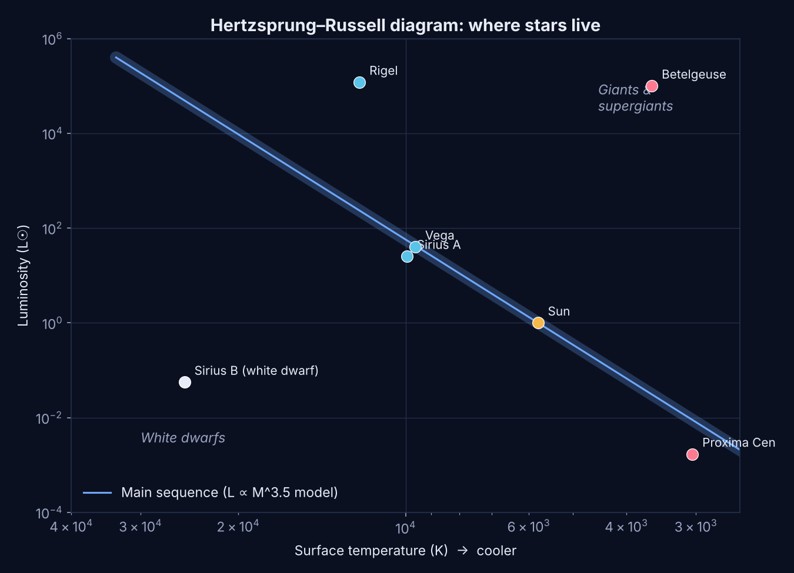
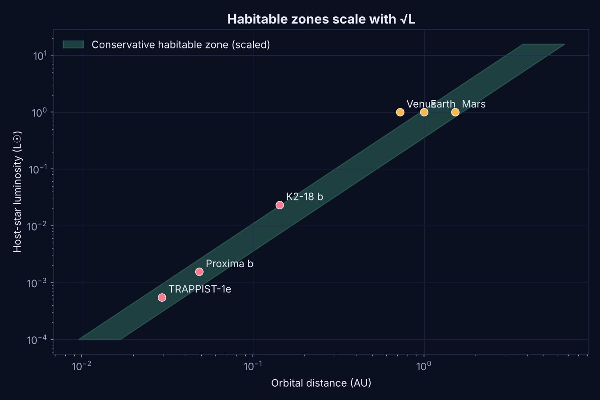
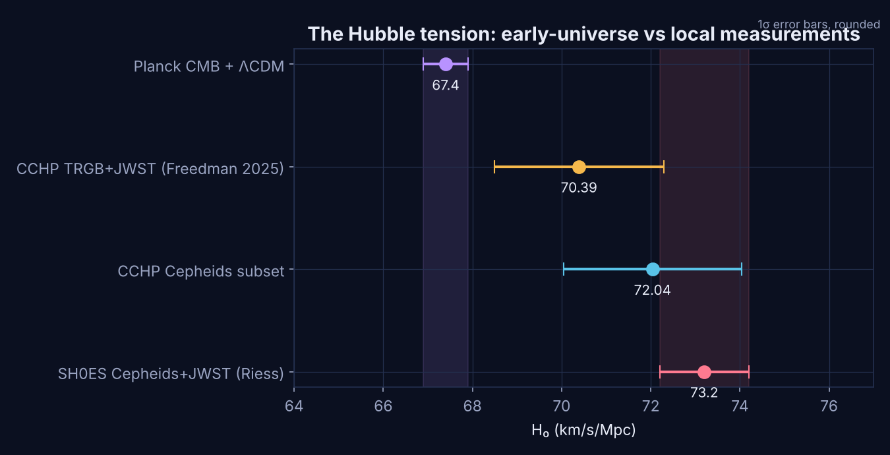
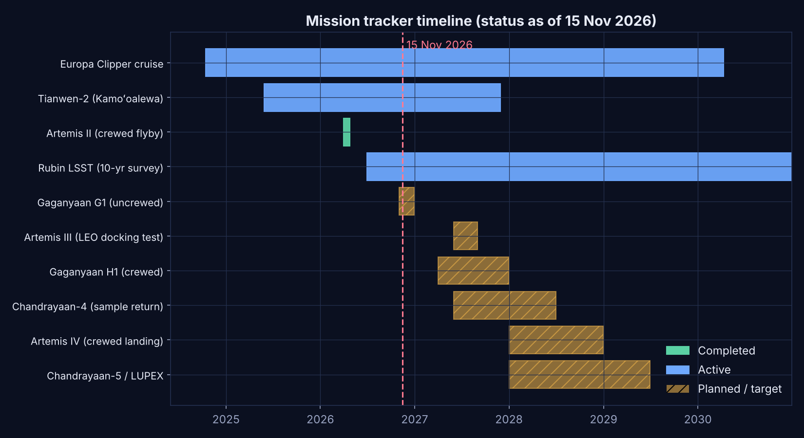
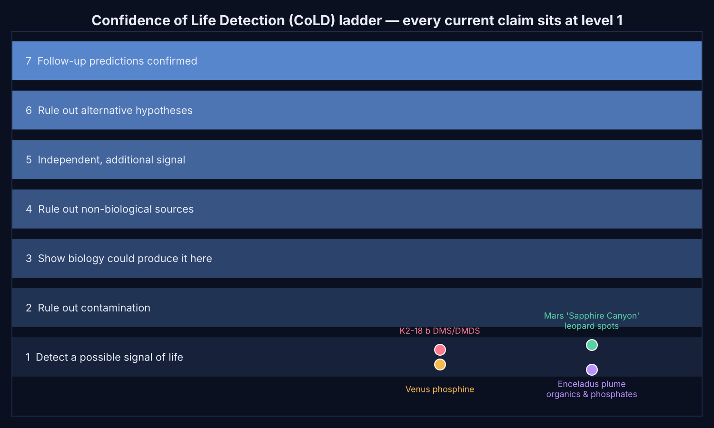
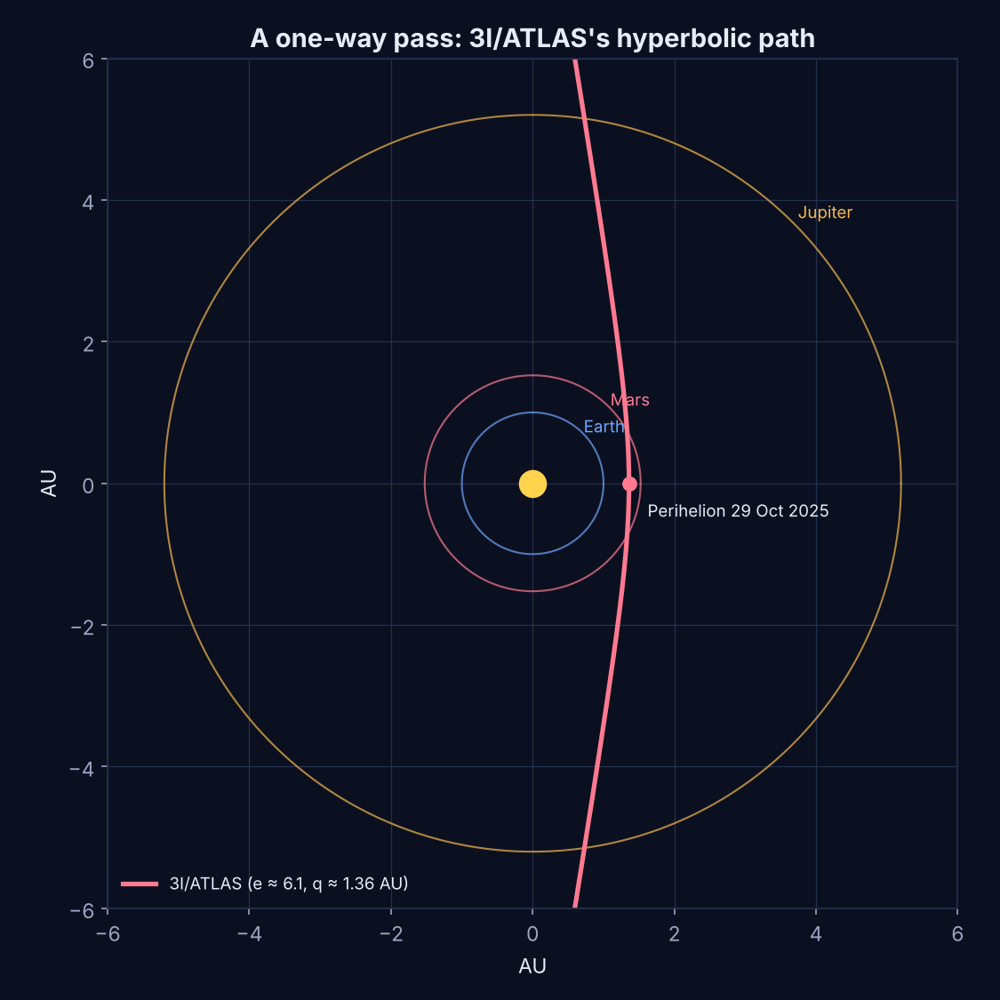
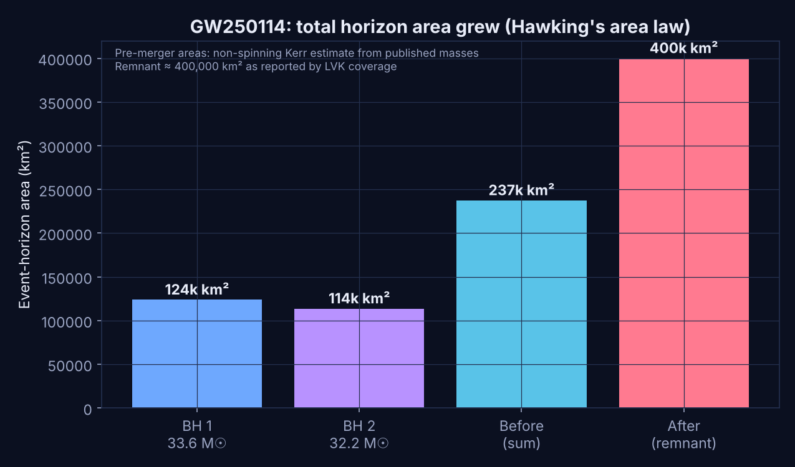
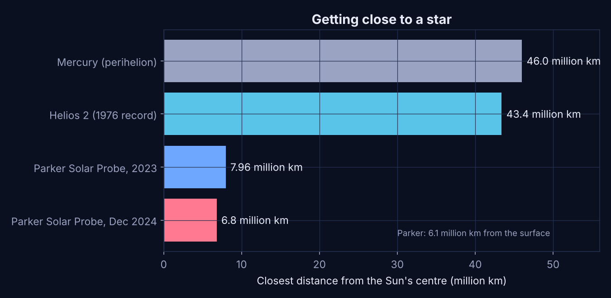

Research tracks
Each track: concepts → open questions → dated studies → sources, with original figures.

⭐ Stellar
Star life cycles, HR diagram, exoplanet census

🪐 Planetary
Mars, Europa, Enceladus, Titan, Kamoʻoalewa

🌌 Cosmology
CMB, DESI dark energy, Hubble tension, early galaxies

🚀 Exploration
Artemis, Gaganyaan, Chandrayaan, Europa Clipper, Rubin

🧬 Astrobiology
CoLD scale, K2-18 b, Mars, TRAPPIST-1 e

☄️ Small Bodies
3I/ATLAS and interstellar visitors, sample return

🕳 Black Holes & GW
GW250114, Hawking's area law, Kerr ringdown

☀️ Heliophysics
Parker Solar Probe, solar wind, space weather
Interactive labs
Single-file browser labs, no install needed.
🛰 Orbital Mechanics Lab
Hohmann transfers, Δv, launch windows
Open lab →🪐 Exoplanet Transit Lab
Light curves, limb darkening, why red dwarfs help
Open lab →Tracker snapshot · 15 Nov 2026
| Stream | Status | Next |
|---|---|---|
| Artemis | II flew 1–10 Apr 2026 | III LEO docking test 2027 · IV landing 2028 |
| Gaganyaan | Separation tests passed | G1 uncrewed, Q4 2026 |
| Europa Clipper | Cruise, healthy | Earth flyby 3 Dec 2026 |
| Tianwen-2 | At Kamoʻoalewa | Sample capsule Nov 2027 |
| DESI / Euclid | Evolving-DE hint; Euclid DR1 due late Oct 2026 | DR1 dark-energy results |
| TRAPPIST-1 e | N₂+CH₄ fits, bare rock not excluded | ~15 more transits |
Paper deep-reads
- DESI DR2 2025 — Is dark energy evolving? arXiv:2503.14738
- Naidu et al. 2026 — MoM-z14 at z = 14.44 OJAp · open
- Freedman et al. 2025 — CCHP H₀ = 70.4 ApJ
- LVK 2025 — GW250114 and Hawking's area law PRL · open
- Seligman et al. 2025 — 3I/ATLAS discovery arXiv / ApJL
- Hurowitz et al. 2025 — Mars Sapphire Canyon Nature
- K2-18 b DMS debate (2025) ApJL vs AJ
- Espinoza & Glidden 2025 — TRAPPIST-1 e ApJL
Sister hub
🌊
Under Water Deep Research Hub
The deep ocean: life at 9,533 m, seabed mining and treaties, how little we've seen. Earth's best analogue for ocean worlds.